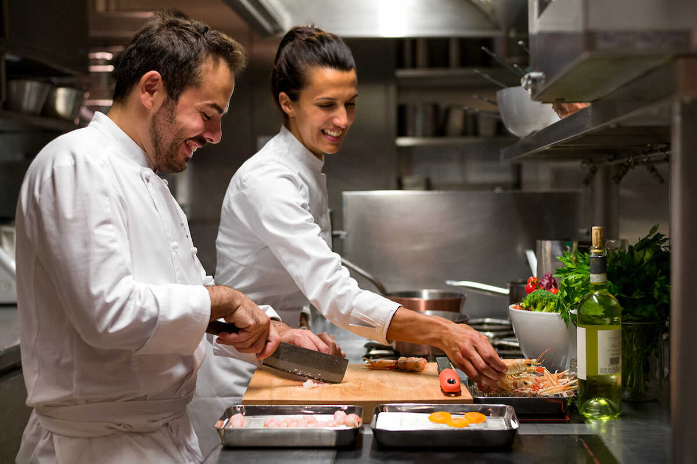

La Experiencia. Tu momento especial.
En un ambiente único inspirado en los canales de Venecia, te transportamos al corazón de Italia.
Descubre sabores auténticos con nuestra carta, inspirada en las tradiciones culinarias italianas.
En un ambiente único inspirado en los canales de Venecia, te transportamos al corazón de Italia.
“A veces resulta difícil encontrar un lugar donde comer o mejor dicho comer bien. He parado un par de veces y estoy encantado, volvere.” – Juan Antonio Puyol.
“Excelente... Me encantó tanto la comida que el finde siguiente volvimos a ir. La verdad que todo ha sido excelente, el trato, la comida y el ambiente.” – Illeana Morales.
“Un restaurante italiano totalmente recomendable. Los mejillones de entrantes con pan de ajo están espectaculares.” – Pau Amengual.